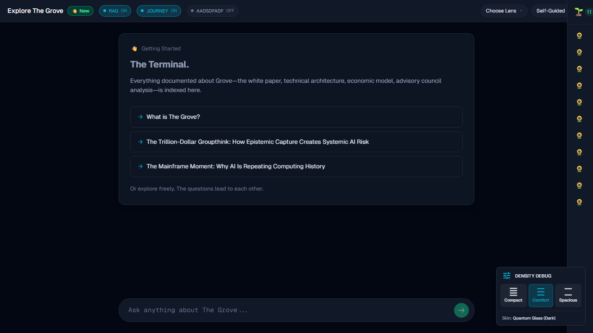
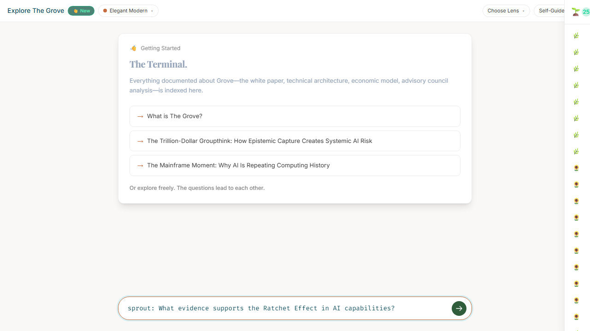
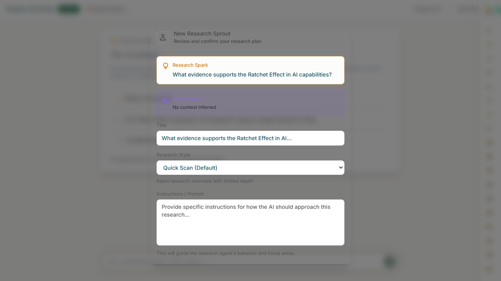
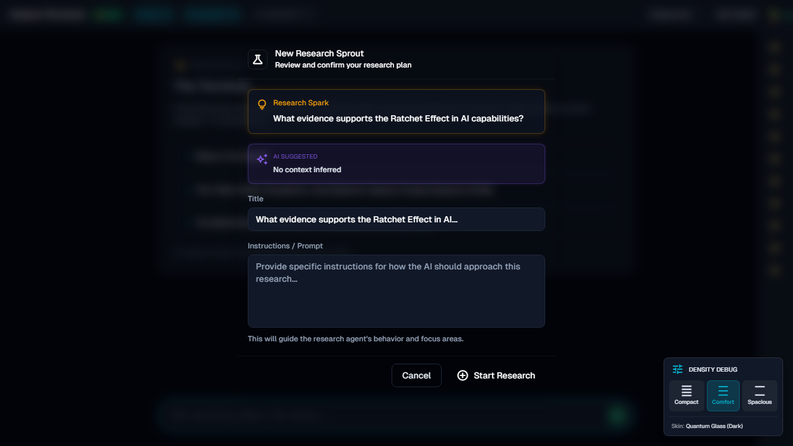
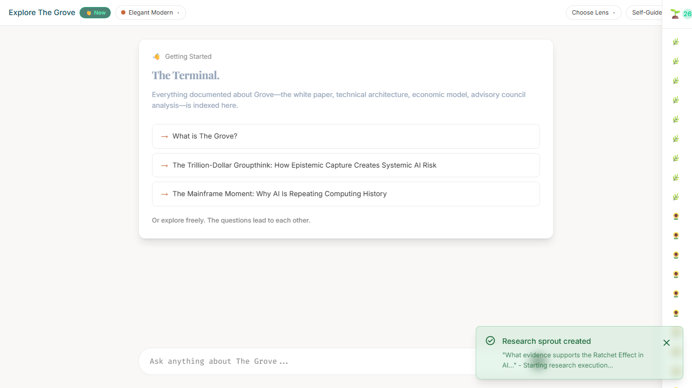
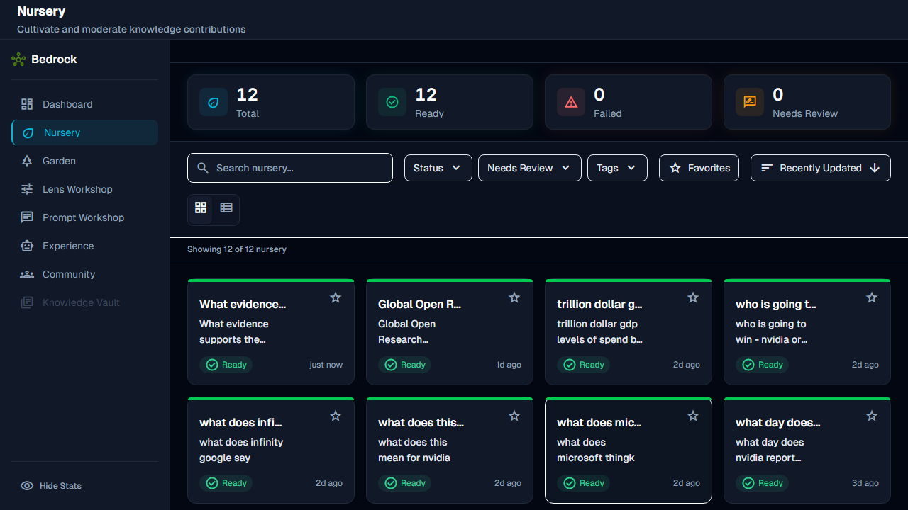

US-B001: Plant Research Sprout
7 Screenshots

Step 1: Navigate to /explore - page loads successfully

Step 2: Enter sprout: command with research query

Step 3: After pressing Enter - processing begins

Step 4: Confirmation dialog appears - "New Research Sprout"

Step 5: Dialog fields - Spark, Title, Instructions

Step 6: After clicking "Start Research"

Step 7: Nursery console loads - sprouts visible